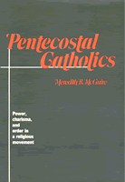

<body bgcolor="#FFFFFF" text="#000000" link="#0000FF" vlink="#CC0000" alink="#CC0000"><center><hr width="350" size="1" align="center" noshade>A study in the sociology of religion<hr width="350" size="1" align="center" noshade><p><a href="https://cdcshoppingcart.uchicago.edu/Cart/ChicagoBook.aspx?ISBN=9780877222354&&PRESS=temple" target="_top">Buy this book!</a> | <a href="https://cdcshoppingcart.uchicago.edu/Cart/Cart.aspx?PRESS=temple" target="_top">View Cart</a> | <a href="https://cdcshoppingcart.uchicago.edu/Cart/Cart.aspx?PRESS=temple" target="_top">Check Out</a></p><p></p></center><!--none//--><h1>Pentecostal Catholics</h1>
<H2>Power, Charisma, and Order in a Religious Movement</H2>
<h3>Meredith B. McGuire</h3>
<P>cloth 0-87722-235-5 $29.95, Jul 07, <FONT COLOR=#990033>Out of Print</FONT>
<BR></P><h3 align="center"><P><font color="#996633">Distinguished Book Award from the Society for the Scientific Study of Religion,
1982</font></P>
</H3>
<h2>Reviews</h2>
<p><i>"McGuire isolates qualities of Catholic pentecostalism which affect its stance against secularism within modern society. Her key analytic concept is "power": prayer group participants can experience a power which provides a basis for meaning and moral norms; the experience consists in empowerment for handling one's world more effectively and leads participants to seek a community of co-believers that produces and is the product of power. The conclusion examines Catholic pentecostalism's power for counteracting secularization and its probable impact on society, church, and individual members. The field-research method of participant observation constitutes perhaps the study's greatest strength. As "participant," McGuire's emic-like descriptions of conversion and incorporation, the ritual and language of prayer meetings, and healings are startlingly accurate. As "observer," her interpretations of these phenomena are lucid and provocative. Pentecostals may be both intrigued and irritated by a study which describes so perceptively yet interprets so dispassionately. Sociologists will welcome the careful research and the breadth of theoretical material which supports the interpretation of the data."</i>
<br>&#151<b>Elizabeth Liebert</b>, <i>Religious Studies Review</i>
<p><i>"Pentecostalism began early in the 20th century, but it only surfaced within Catholicism in the spring of 1967. Catholic Pentecostals are part of the larger denomination, but they believe the power of God is given directly to ordinary human beings through "gifts of the Holy Spirit." The constituency is middle-class, middle-aged, and lay-led. This is a sociological study, based on scores of interviews and attendance at numerous meetings of seven groups of Pentecostal Catholics. The author properly notes that in the Pentecostal meeting other factors are just as important as glossalalia: "witnessing" is a period for describing God's solutions to personal problems; "prophecies" announce God's presence and call on hearers for full surrender to him. Healing is another hallmark of Pentecostalism. McGuire suggests that in Pentecostalism there are ways of defining illness and health that are different from those in the dominant medical community. Sickness may be physical, emotional, or spiritual; health is understood as emotional growth and absence of sin as well as overcoming injury or disease. A useful addition to J.H. Fichter's </i>The Catholic Cult of the Paraclete<i> (1975). Recommended for undergraduate and graduate libraries supporting religious studies."</i>
<br>&#151<b><i>Choice</i></b>
<p><i>"As a way of studying the recent growth of religious and quasi-religious movements in our secular society, Meredith McGuire makes a case study of the Catholic pentecostal movement. She examines: the beliefs, values, and practices of the movement; the processes of conversion, commitment, and socialization into the movement; the ritual and use of language of the prayer group; Catholic pentecostal beliefs about illness, health, and healing; the social structure and norms of the pentecostal groups. Finally she asks what the movement can tell us about contemporary society."</i>
<br>&#151<b><i>Theology Digest</i></b>
<p>Read a <a href="../authors/238_review.pdf">review</a> from the <I>Christian Scholar's Review</I> (1985), written by Robert L. Saucy (pdf).
<p>Read a <a href="../authors/238_review2.pdf">review</a> from <I>Church History</I> (1984), written by James T. Connelly (pdf).
<p>Read <a href="../authors/238_review3.pdf">The God of Our Calculations</a>, a review from <I>Commonweal</I>, 28 January 1983 (pdf).
<p>Read a <a href="../authors/238_review4.pdf">review</a> from <I>Sociological Analysis</I> (1982), written by John Wilson (pdf).
<BR>&nbsp;<H2>About the Author(s)</H2>
<P><b>Meredith B. McGuire</b> is Professor of Sociology and Anthropology at Trinity University, San Antonio, Texas. She is past-President of both the Society for the Scientific Study of Religion and the Association for the Sociology of Religion. She is an active member of other national and international associations in sociology and anthropology.</P>
<BR><H2>Subject Categories</H2>
<p><A HREF="/tempress/sociology.html" TARGET="_top">Sociology</a>
<BR><A HREF="/tempress/religion.html" TARGET="_top">Religion</a>
</p>
<p align="center"><a href="https://cdcshoppingcart.uchicago.edu/Cart/ChicagoBook.aspx?ISBN=9780877222354&&PRESS=temple" target="_top">Buy this book!</a> | <a href="https://cdcshoppingcart.uchicago.edu/Cart/Cart.aspx?PRESS=temple" target="_top">View Cart</a> | <a href="https://cdcshoppingcart.uchicago.edu/Cart/Cart.aspx?PRESS=temple" target="_top">Check Out</a></p><p><font face="Arial" size="1"><a href="copyright.html" onMouseOver="window.status='Web Copyright Policy';return true;" onMouseOut="window.status=''" title="Web Copyright Policy">&copy;</a> 2015 <a href="http://www.temple.edu" target="new" onMouseOver="window.status='Link to Temple University home page';return true;" onMouseOut="window.status=''" title="Link to Temple University home page">Temple University</a>. All Rights Reserved. http://www.temple.edu/tempress/titles/238_reg.html</font></p>